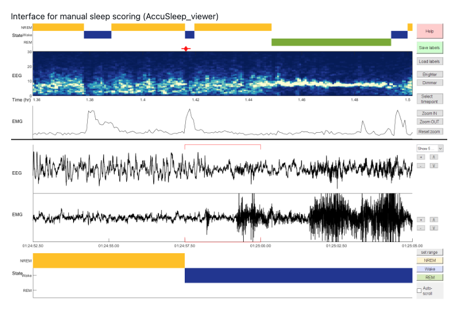
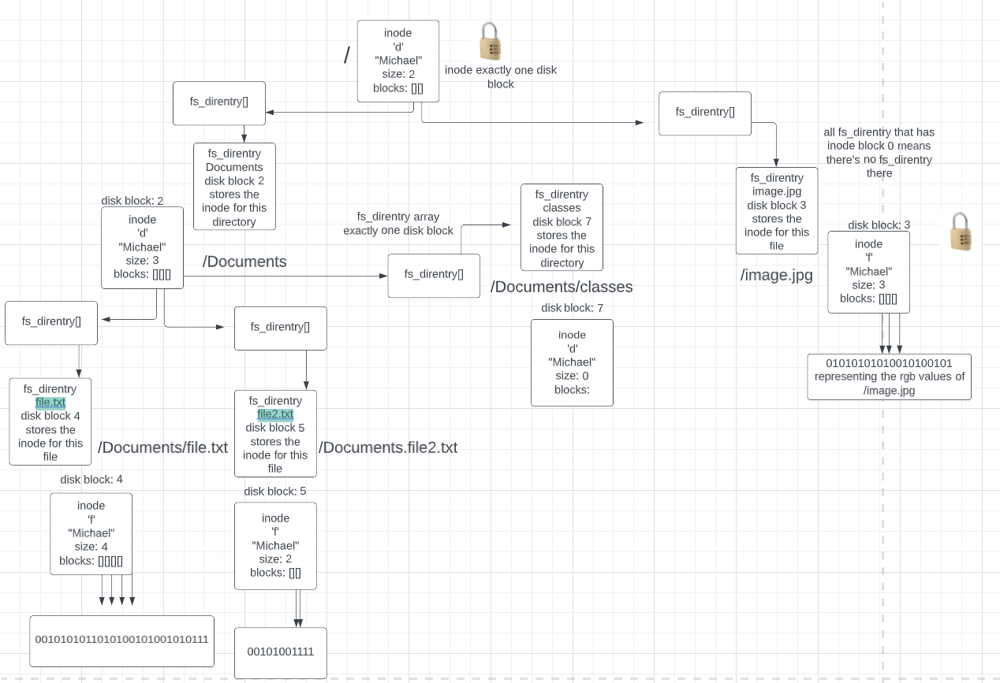

Hi, I'm Michael Yu.

I am


Hi, I'm Michael Yu.
Hi, I'm a senior at the University of Michigan pursuing a B.S. in computer science 💻. I'm proficient in C, C++, Python, and am familiar with JavaScript and web scripting languages as well. I have been enjoying participating in weekly Leetcode coding competitions and am trying to get more into competitive programming. I also developed a love for reading books during my sophomore year of college 📖. Here are some of the books I particularly enjoyed.
During my free time, I also like to play tennis 🎾, keep up with world news 📰, and challenge my friends to a game of League of Legends.

AccuSleep is a set of GUIs used to score sleep states using EEG and EMG recordings. I added new functionalities within a 2500+ line code base to allow researchers to score sleep states with increased accuracy. I created new categories and buttons for artifact sleep states to allow researchers to account for extraneous and unintended factors affecting the results of data collection.
Inspired by Mendelian Genetics, I created a python program that's meant to provide a rudimentary simulation of the rate at which germline mutations propagate through multiple filial generations.
Designed and created an application for elders to connect using React.js, Flask, SQL, Python, HTML/CSS, and hosted on Amazon Web Services’s EC2. Maintained a database of accounts and posts with CRUD (create, read, update, delete) features.

Implemented a client-server file system that allows for multiple clients to read/write to files and create/delete files or directories concurrently. Gained understanding of inodes, persistent storage via transactions, and hand-over-hand locking. I diagrammed the architecture shown above on LucidCharts.
Implemented entire thread library that respects concurrency on multiple CPUs utilizing interrupts and atomic test and set. Implemented functionality from scratch for thread join, thread yield, mutex lock, unlock, CV wait, signal, broadcast, and CPU init.
Built a scalable search engine using text analysis, link analysis, and parallel data processing with MapReduce. Used a Service-Oriented Architecture to scale dynamic pages and web search.

Upon a visit to Petite Friture’s website, I noticed that the French design brand hosts a collection of various
small furniture items with rather minimalistic design. Their products include lamps, teacups, stools, among others.
Recently, they have launched a new product: the Neotenic lamp. This product consists of a spherical glass lamp held by a
twisted helix-like structure that comes in different colors.
The first phase of new-product development is idea generation. In this phase, Petite Friture does not seek to
only generate perfect ideas. Rather, to come up with as many potential ideas that they can. I noticed that Petite
Friture focuses on products that fit well into natural surroundings. Their instagram page hosts a number of their
products embedded in a background of camping, hiking, and lake settings. The Neotenic lamp further enhances their brand
image as one whose products are harmonious with natural settings and the nature of life. The helix from which the
spherical glass sits on is almost reminiscent of a DNA helix.
Among the multiple ideas that were generated, only those with the greatest potential of success in the market
were selected in the screening phase.
The next step would be concept testing. It is possible that Petite Friture has a customer advisory board where a
small group of actual customers provided feedback about their feelings and attitudes to their product ideas. If that
was the case, it is perhaps fair to assume that the Neotenic lamp was well-regarded by these customers. Petite Friture
could also have tested the new product idea on focus groups of customers. Since the Neotenic lamp is a tangible
product, Petite Friture most likely conducted qualitative analysis of customers’ attitudes to the product in an in-person
setting as opposed to through an online medium such as with online focus groups.
The business analysis stage consists of determining whether the new product will succeed and bring in profit if
released to the market — if the Neotenic lamp is worth pursuing given the financial sacrifice. The French design brand
might have a Marketing Information System as a technology in its toolbox. The Marketing Information System could provide
Petite Friture valuable information on competitors and competing products, both generic competitors and total budget
competitors. Generic competitors might include firms that also sell lamp products: anything ranging from Target
to Home Depot, to more stylish or upscale brands such as Urban Outfitters or Gantri. Total budget competitors could
include any place that sells decorative or small household furniture at all. The company could use both primary data that is
data observed directly from a responding group, or secondary data — data that was generated elsewhere originally for
some other purpose. After analyzing a multitude of information, Petite Friture also comes up with a price that
includes the production cost as well as a markup to determine the final cost of the Neotenic lamp — $140.
The next step involves developing the product. Petite Friture creates a prototype, then a minimum viable
product. It is the supply chain manager’s job to maintain a flow of product manufacturing and distribution which consists of
acquiring the raw materials, manufacturing, distribution, and ending at selling to the customer. The raw materials consist
of Resin and glass. Petite Friture is unlikely to manufacture the light bulbs themselves, so they would instead
purchase component parts from another manufacturer. Process materials would include the glue used to attach the bulb to
the helix base and paint for outer color coating.
Lastly, Petite Friture brings its new product to the market and commercializes its new lamp product. Petite
Friture could sell its product on its own website, or on online retailers such as amazon.com or physical retailers for
home goods sales. Since the Neotenic lamp is priced at a whopping $140, Petite Friture could reduce the risk for
customers to purchase by including warranties.
**I am not an expert in marketing, nor do I have any stake in Petite Friture or any other business. None of what
I have written above is factually grounded. I am simply detailing my thoughts to help myself understand more about
the subject of marketing and product development.
November, 2022
An NP-Complete problem that I have encountered previously is the game Battleship, which I played a lot
of during middle school.
Battleship is a 1v1 game that’s usually played on a 10x10 grid in which the two players each have a fleet of
battleships that take up a certain length that they place on their board, hidden from the opponent. The
players then take turns guessing the coordinates of each other’s boards, attempting to hit an enemy
battleship. Once all parts of a battleship are guessed correctly, that battleship is sunk. Whoever sinks all
enemy battleships wins.
Battleship is an NP-Complete problem because it is both NP and NP-hard.
Battleship is NP because given a certificate that is a guess of all the positions of where the battleships
are on the grid, we can efficiently check if the guess correctly sinks all parts of every enemy ship. This
will take the size of the guesses certificate, which is O(n^2) where n is the length of a side of the grid.
Battleship is NP-hard because we can reduce the 3SAT problem to the battleship problem. And since 3SAT is
NP-hard, battleship is NP-hard. Another way to intuit that battleship is NP-hard is that there is no
efficient algorithm for solving it. However, there can be heuristics that could help, such as guessing the
squares up, down, left, and right of a correct guess.
November, 2021